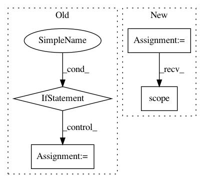

7281b68353fa8f9263e071716ac5081df5168f59,pgmpy/inference/ExactInference.py,VariableElimination,_variable_elimination,#VariableElimination#Any#Any#Any#Any#,9
Before Change
for query_var in variables:
phi = factor_product(*final_distribution)
phi.marginalize(list(set(variables) - set([query_var])))
if evidence:
phi.reduce(["{evidence_var}_{evidence}".format(
evidence_var=evidence_var, evidence=evidence[evidence_var])
for evidence_var in evidence])
phi.normalize()
query_var_factor[query_var] = phi
return query_var_factor
def query(self, variables, evidence=None, elimination_order=None):
After Change
// Dealing with evidence. Reducing factors over it before VE is run.
for evidence_var in evidence:
for factor in working_factors[evidence_var]:
factor_reduced = factor.reduce("{evidence_var}_{state}".format(
evidence_var=evidence_var, state=evidence[evidence_var]), inplace=False).normalize()
for var in factor_reduced.scope():
working_factors[var].remove(factor).add(factor_reduced)
// TODO: Modify it to find the optimal elimination order
In pattern: SUPERPATTERN
Frequency: 3
Non-data size: 4
Instances
Project Name: pgmpy/pgmpy
Commit Name: 7281b68353fa8f9263e071716ac5081df5168f59
Time: 2015-02-01
Author: ankurankan@gmail.com
File Name: pgmpy/inference/ExactInference.py
Class Name: VariableElimination
Method Name: _variable_elimination
Project Name: tensorflow/models
Commit Name: 90d1a0bbbca309628e9e8ddc285ca1bf33913eff
Time: 2020-11-06
Author: rathodv@google.com
File Name: research/object_detection/model_lib_v2.py
Class Name:
Method Name: eval_continuously
Project Name: dpressel/mead-baseline
Commit Name: a1a5bd048b80b97dbfce02e99571681cda669e7d
Time: 2021-03-20
Author: dpressel@gmail.com
File Name: baseline/tf/lm/training/eager.py
Class Name: LanguageModelTrainerEagerTf
Method Name: train